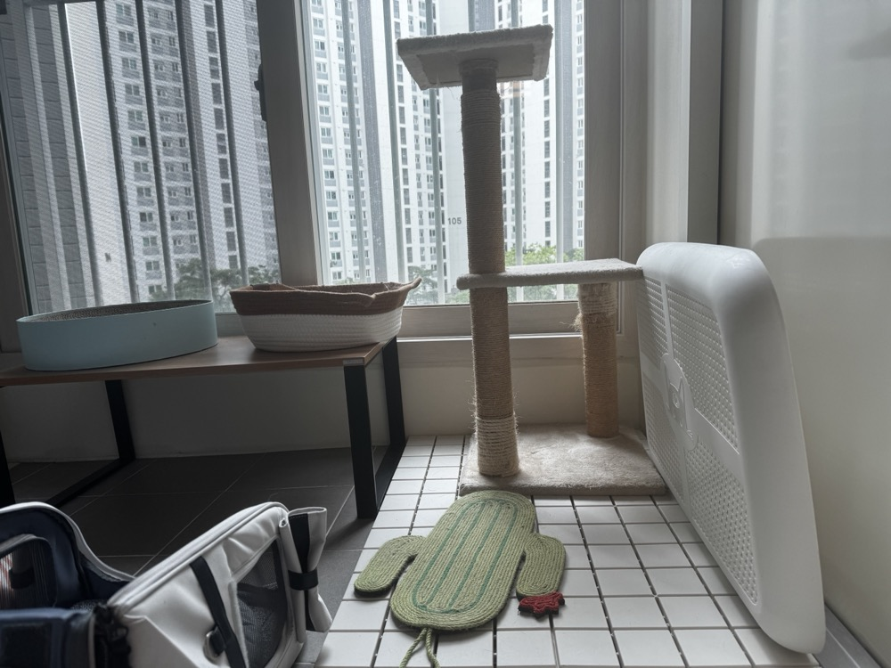
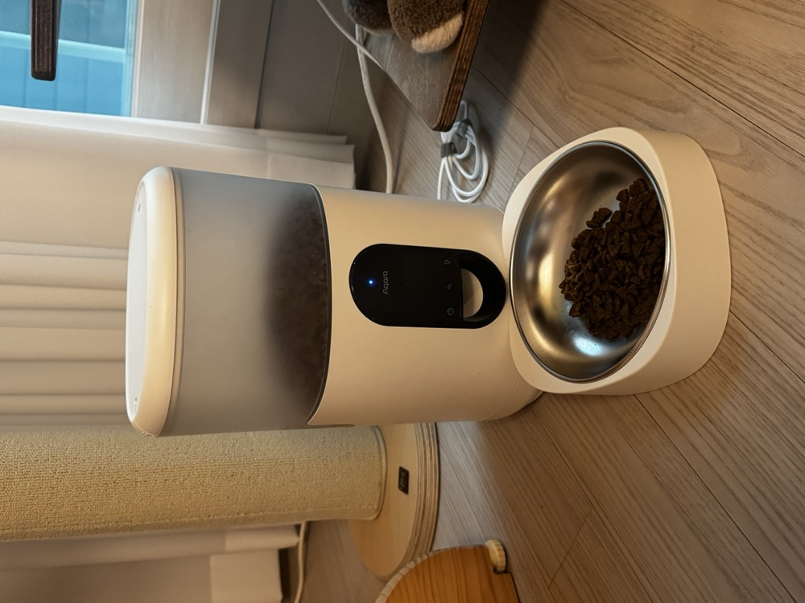
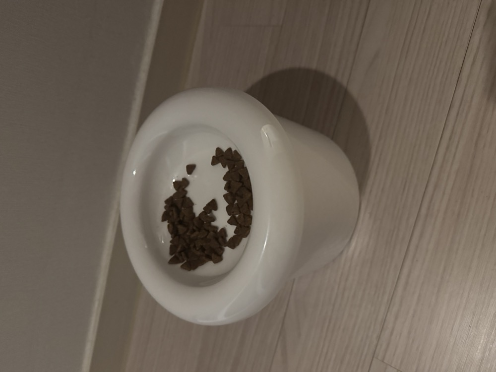
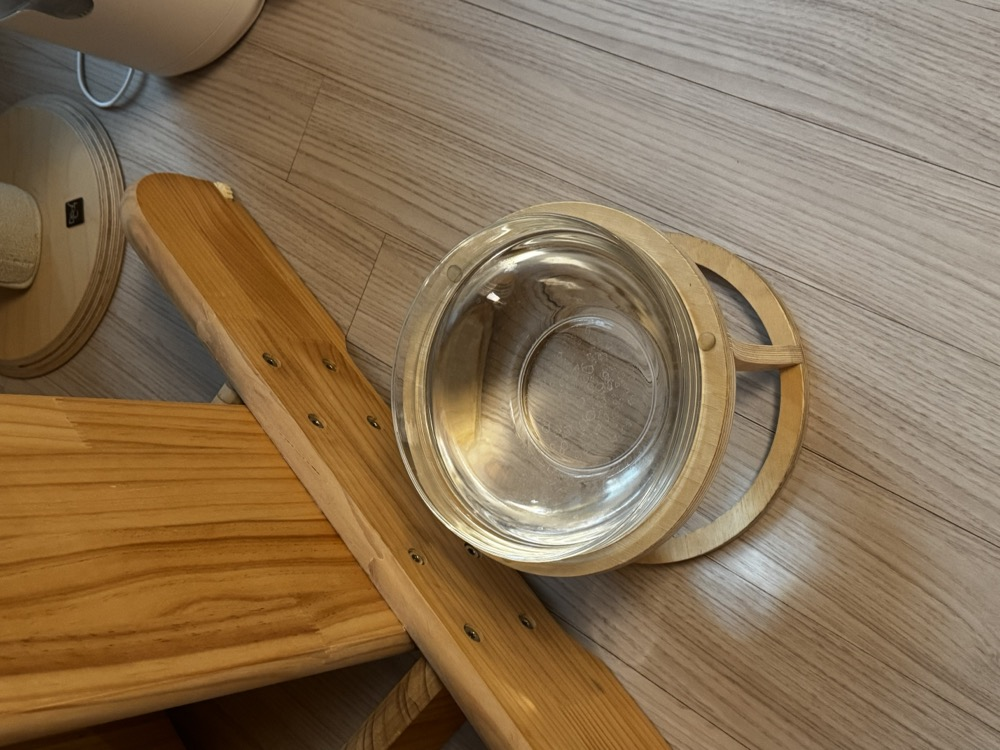
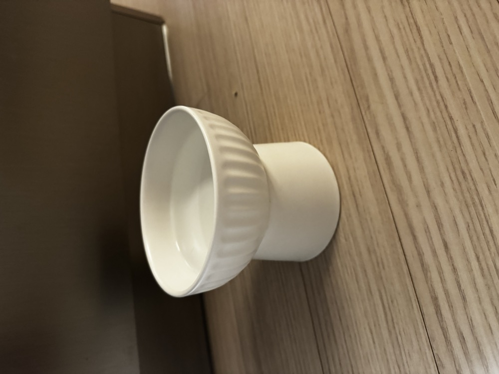
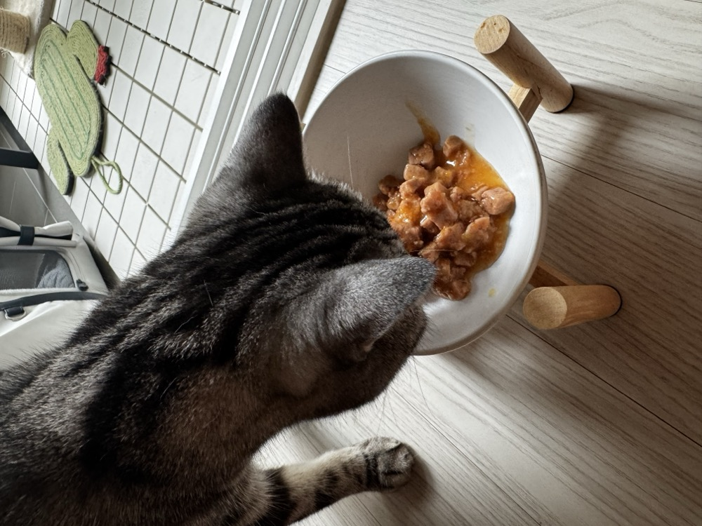
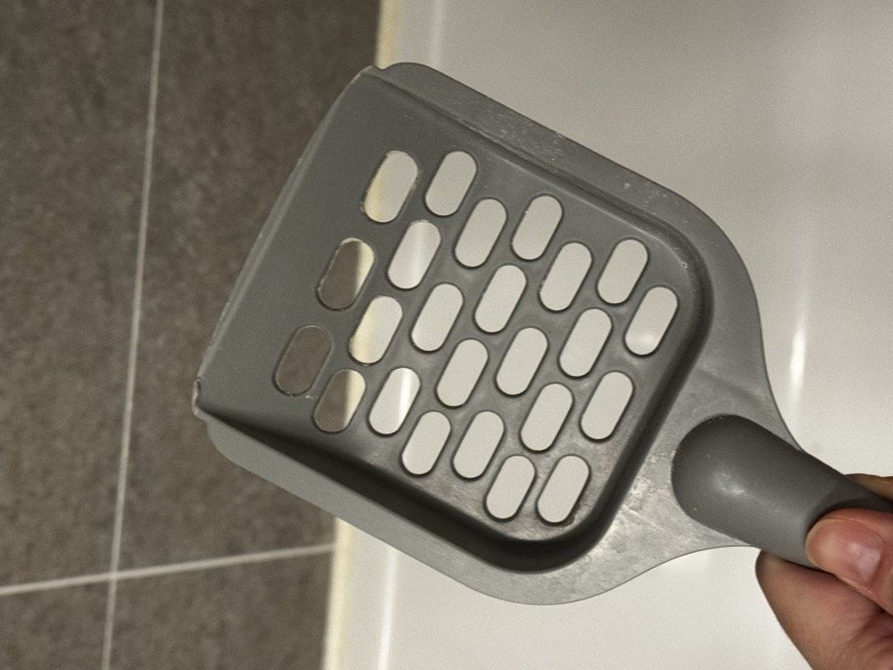
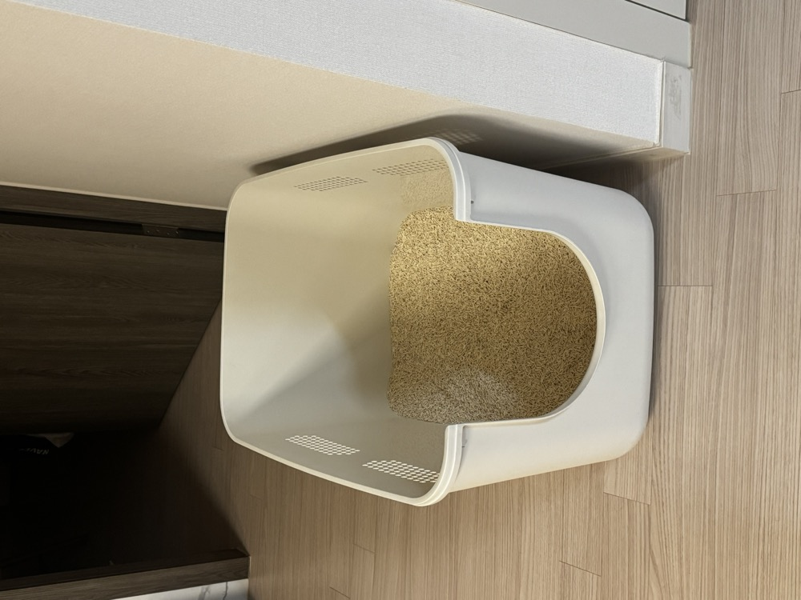
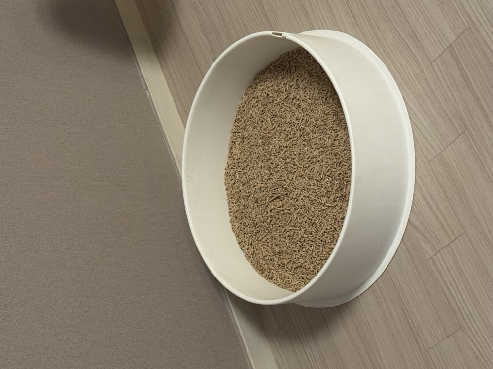

현관문을 열면 달려나와요.
반주가는 중문이 없어요. 그리고 반주가 호기심이 많아서 현관 앞까지 나와 있을 수 있어요. 갑자기 반주가 뛰쳐나갈 수 있으니, 문을 열 때 살~짝 조심히 열어 주세요!
궁디팡팡을 싫어해요.
전세계의 10% 미만이라던데, 반주가 그래요. 대신 미간 사이를 만져 주는 걸 좋아해요. 조금 친해지면 눈인사를 하고, 눈과 눈 사이를 한번 문질러 보세요. 그치만 우리 고양이는 사람도 팹니다.
누나들을 좋아해요.
남자사람보다는 여자사람을 좋아해요. 땅콩을 잃어버리기 전에는 남자였거든요. 하하하
반주 방은 거실 옆 큰 방의 베란다에요.
아마 마중 나오지 않았다면 그 곳에 있을지도 몰라요. 반주가 어릴 때부터 쓰던 애착 캣타워가 있는 곳이에요.


메인 밥그릇
거실 캣타워 밑에 있어요. 중간 버튼을 누르면 밥이 나와요.

서브 밥그릇
화장실 앞에 있어요. 뚜껑을 열면 밥이 들어 있어요.

메인 물그릇
캣타워 밑에 있어요. 한번 헹구고 주방이나 화장실에서 수돗물로 받아요.

서브 물그릇
주방 앞 아일랜드 옆에 있어요. 이것도 비우고 수돗물을 다시 채워주세요.

습식사료 그릇
아마 남겼을 가능성이 좀 있는데요. 부엌 싱크대에서 세제 없이 물로 헹구고 새로운 습식 사료를 담아 주세요. (음쓰는 그대로 싱크대에 두세요.)

모래 삽
거실 화장실 세면대 위에 있어요. 삽을 쓴 뒤에는 세면대 위에 올려주세요.

메인 화장실
여기에 주로 맛동산이 숨어 있어요. 거실 화장실 변기에 버려주세요!

서브 화장실
여기는 감자 전용이에요. 이것도 그냥 거실 화장실 변기에!
복받으실 거예요.
감사합니다!